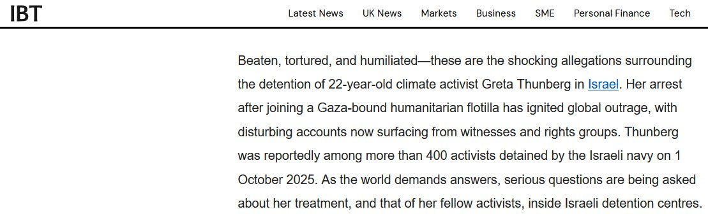
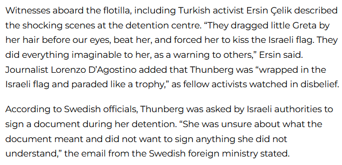
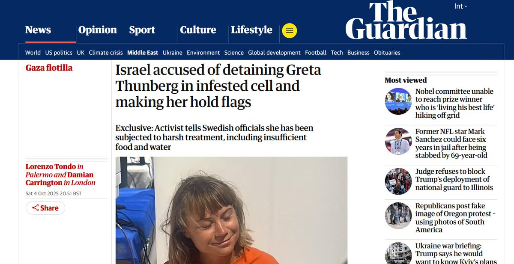

布希亞在《海灣戰爭不曾發生》（The Gulf War Did Not Take Place, 1991）中，將戰爭視為媒體模擬的超現實（hyperreality）
以色列的封鎖與攔截落後於此，因為它們是模擬戰爭的遊戲：媒體聚焦Thunberg「受害」，掩蓋加薩真實饑荒，讓衝突淪為符號戰
以色列的行為不是「真戰」，而是模擬霸權

以色列的封鎖與攔截落後於此，因為它們是模擬戰爭的遊戲：媒體聚焦Thunberg「受害」，掩蓋加薩真實饑荒，讓衝突淪為符號戰
以色列的行為不是「真戰」，而是模擬霸權



已有多家媒体报道证实以色列在虐待通贝利和其他船员，根本就不是所谓的“不是很愉快”。更别说阻挠运输救命的人道援助有多可耻,关押自由船队的克齐奥特监狱本就因严重人权问题臭名昭著。
以色列对西方国家公民的行为，不是合格的“民主”国家，不是亲以右翼长期标榜的中东“人权”灯塔，这一点已经无需多言。 https://t.co/qSEEtXKayh https://t.co/JmMkZjJUhF
以色列对西方国家公民的行为，不是合格的“民主”国家，不是亲以右翼长期标榜的中东“人权”灯塔，这一点已经无需多言。 https://t.co/qSEEtXKayh https://t.co/JmMkZjJUhF